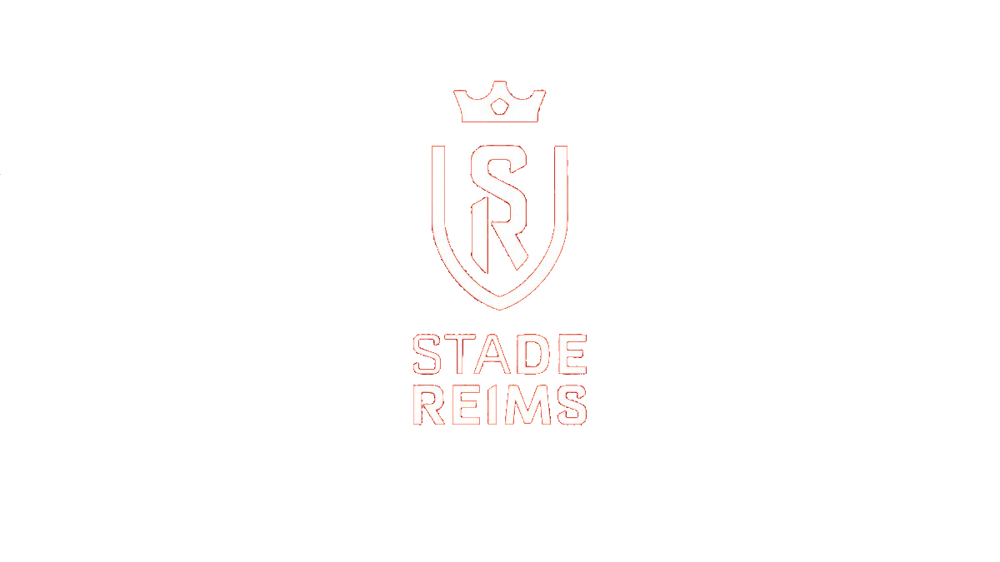

Le club de reims a été fondé en 1931. En 1935, le club opte pour le professionnalisme et intègre la deuxième division du championnat de france. Dans les année 1950, le stade de reims simpose comme le pincipal club français en amassant en quelques années un palmarès prestigieux. Le satde de reims repart en division d'honneur du Nord-est, 6e échelon du football français , d'où il lui faudra dix saisons pour remonter en Ligue 2. 33 ans après sa dernière saison au plus haut niveau national, Reims fait finalement son retour en Ligue 2.

Président du club :
Jean pierre Caillot
Il est président depuis mai 2021.

Entraineur :
Will Still
Il est entraineur depuis le 13 octobre 2022.
| Compétitions nationales |
|---|
| Championnat de france: champion 1949, 1953, 1955, 1958, 1960, 1962 |
| Vice-champion 1947, 1954, 1963 |
| Championnat de france D2: champion 1966, 2018 |
| Championnat de france D3: champion: 2004 |
| Coupe de france : vainqueur en 1950, 1958,Finaliste en 1977 |
| Coupe Charles Drago: vainqueur en 1954 |
| Challenge des champions: vainqueur 1955, 1958, 1960, 1966 |
| Compétitions internationales |
|---|
| Coupe des clubs champion: finaliste en 1956, 1959 |